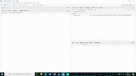
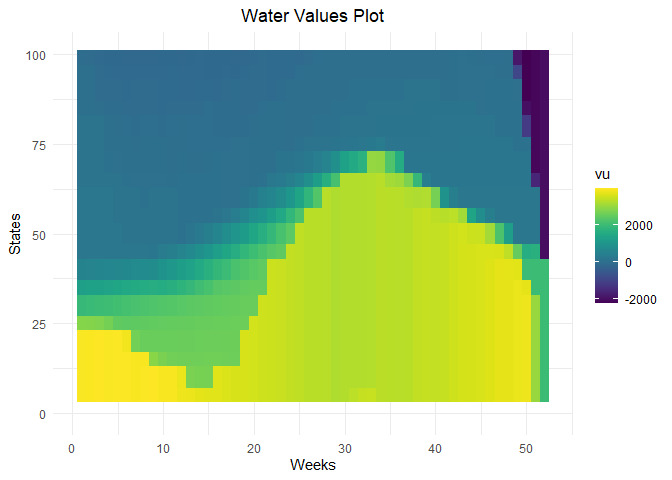
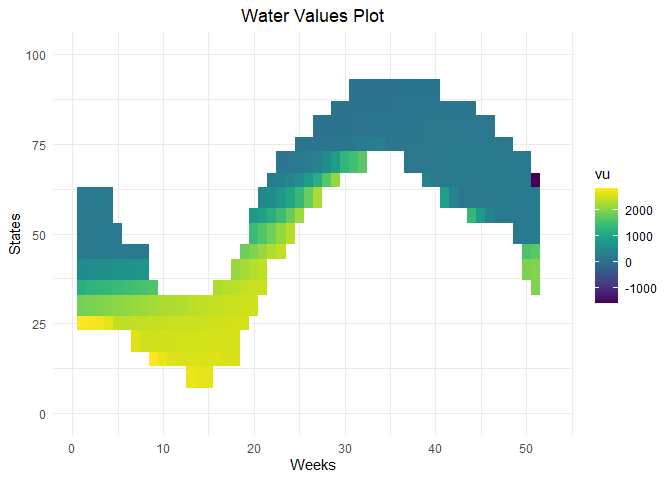
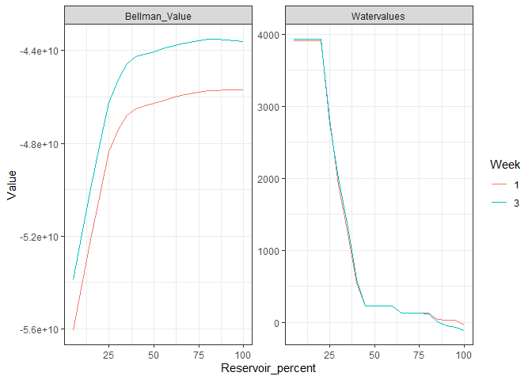
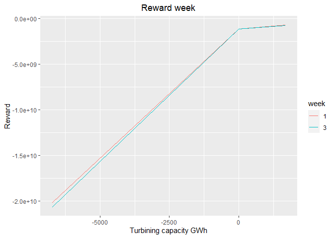
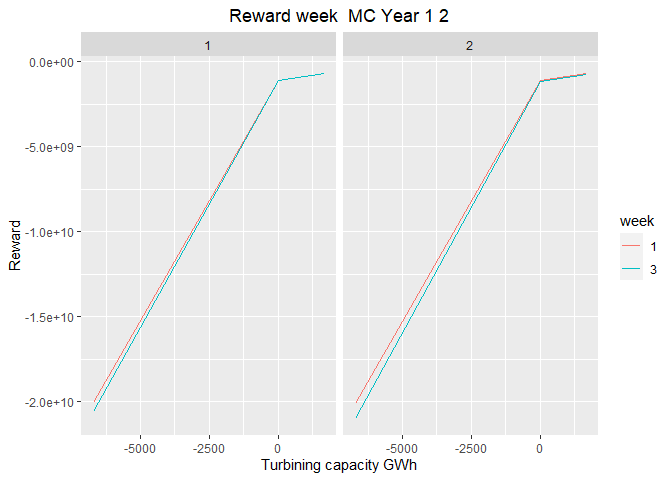
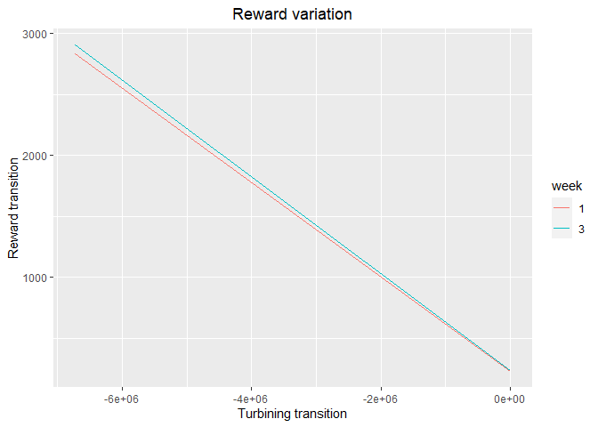
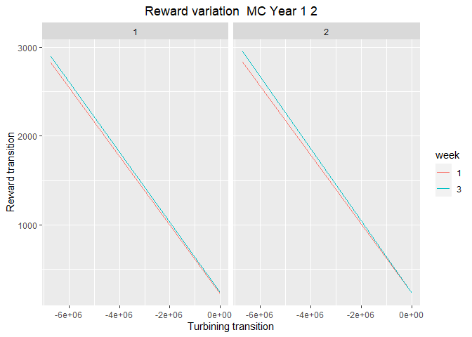

This package calculate water values for long term storages in Antares studies. It uses Antares simulations and dynamic programming.
More theoretical details are given in : vignette("computation_watervalues").
Installation
You can install the latest version of antaresWaterValues from GitHub with:
# install.packages("devtools")
devtools::install_github("rte-antares-rpackage/antaresWaterValues@*release") To load the package use :
Now we are ready to use our package. If something gets wrong, please check dependencies versions in DESCRIPTION.
Using the Shiny app
study_path <- "your/path/to/the/antares/study"
shiny_water_values(antaresRead::setSimulationPath(study_path,"input"))
Without the Shiny app
Begin by defining some parameters about your study.
opts <- antaresRead::setSimulationPath("your/path/to/the/antares/study","input")
area <- "area"
pumping <- T #T if pumping possible
mcyears <- 1:3 # Monte Carlo years you want to use
efficiency <- getPumpEfficiency(area,opts=opts)
name = "3sim"Then, you have to run simulations.
simulation_res <- runWaterValuesSimulation(
area=area,
nb_disc_stock = 3, #number of simulations
mcyears = mcyears,
path_solver = "your/path/to/antares/bin/antares-8.6-solver.exe",
opts = opts,
otp_dest=paste0(opts$studyPath,"/user"),
file_name=name, #name of the saving file
pumping=pumping,
efficiency=efficiency
)If you want to retrieve results from previous simulations, you can use :
Now compute reward functions :
reward_db <- get_Reward(
simulation_names = simulation_res$simulation_names,
simulation_values = simulation_res$simulation_values,
opts=opts,
area = area,
mcyears = mcyears,
efficiency = efficiency,
method_old = T,# T if you want a simple linear interpolation of rewards,
# F if you want to use marginal price to interpolate
possible_controls = constraint_generator(area=area,
nb_disc_stock = 20,
mcyears=mcyears,
pumping = pumping,
efficiency = efficiency,
opts=opts)# used for marginal prices interpolation
)
reward <- reward_db$rewardFinally, compute water values :
results <- Grid_Matrix(
area=area,
reward_db = reward_db,
mcyears = mcyears,
states_step_ratio = 1/20, # discretization of states
method= "grid-mean",
opts = opts,
pumping=pumping,
efficiency=efficiency,
penalty_low = 1000,#penalty for bottom rule curve
penalty_high = 100,#penalty for top rule curve
force_final_level = T, # T if you want to constrain final level with penalties (see Grid_Matrix documentation for more information)
final_level = get_initial_level(area=area,opts=opts), # wanted final level (between 0 and 100%)
penalty_final_level_low = 2000,
penalty_final_level_high = 2000
)
aggregated_results <- results$aggregated_resultsWater values are written to Antares thanks to the following instructions :
reshaped_values <- aggregated_results[aggregated_results$weeks!=53,] %>%
to_Antares_Format_bis()
antaresEditObject::writeWaterValues(
area = area,
data = reshaped_values
)Values in reshaped_values are not monotone because Antares will average values.
Before running a simulation, hydro-princing-mode must be change to accurate :
settings_ini <- antaresRead::readIni(file.path("settings", "generaldata.ini"),opts=opts)
settings_ini$`other preferences`$`hydro-pricing-mode` = "accurate"
antaresEditObject::writeIni(settings_ini, file.path("settings", "generaldata.ini"),overwrite=T,opts=opts)Plot results
waterValuesViz(Data=aggregated_results,filter_penalties = T)
plot_Bellman(value_nodes_dt = aggregated_results,
weeks_to_plot = c(1,3))
You can also plot reward functions
plot_1 <- plot_reward(reward_base = reward,
weeks_to_plot = c(1,3))
plot_2 <- plot_reward_mc(reward_base = reward,
weeks_to_plot = c(1,3),
scenarios_to_plot = c(1,2))
plot_3 <- plot_reward_variation(reward_base = reward,
weeks_to_plot = c(1,3))
plot_4 <- plot_reward_variation_mc(reward_base = reward,
weeks_to_plot = c(1,3),
scenarios_to_plot = c(1,2))